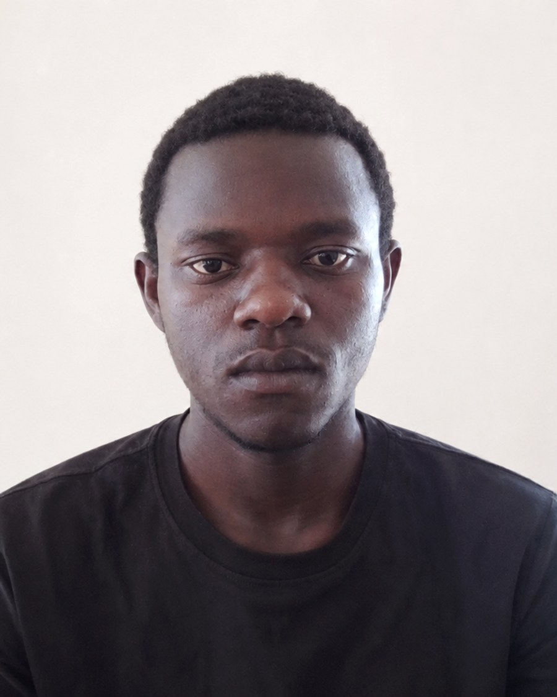

Hassan Tsuma Karungwa
I’m a backend and full-stack engineer in Kenya, and still a Computer Science student. Most of what I know about building real software didn’t come from coursework. It came from building RentManager on my own, end to end, and running into the problems a tutorial never mentions.
I like problems where correctness matters more than shipping speed: money, records, anything a business cannot afford to get wrong. RentManager started out as “build a rental app” and became far more interesting the moment M-Pesa, Kenyan tax law and multi-tenant data isolation came into it. I didn’t back away from that. I read Safaricom’s merchant terms, read the Finance Act, and built a tax module that fails closed by default, because I’d rather under-compute than get a government filing wrong.
I won’t tell you I’m an expert across a long list of technologies. I’m not yet, and the list wouldn’t be honest. What I can say is that I’ve built one real system deeply enough to know where the hard problems live in software like this. It isn’t the CRUD screens. It’s the tenant boundary, the ledger, the idempotency guarantees, the things that are easy to get subtly wrong and expensive to have gotten wrong. I’m building depth by taking on harder versions of that same problem instead of collecting frameworks.
The part I’m proudest of isn’t a feature. It’s that the thing is deployed and running, across a web app, a native mobile app and the API underneath both. Getting there meant learning the parts nobody writes tutorials about: squeezing a Spring Boot service into 512 MB, keeping a free-tier container awake so M-Pesa callbacks don’t hit a sleeping server, and scheduling the encrypted backups I still owe myself a restore drill on.
Outside RentManager I’m still working through the fundamentals properly. Data structures, algorithms and the JavaFX exercises on my GitHub are all part of that, and none of it is portfolio polish. Judge me on RentManager. That’s the real thing.
What I’m looking for
My first serious engineering role, whether that’s graduate, junior or an internship, backend or full-stack. I take on freelance and contract work alongside it. I can work remotely in any timezone from UTC+3, on-site in Kenya, or relocate for the right role. What I want most from the next step is to work with engineers who’ll review my code and show me how a system behaves under real load. Building alone could never teach me that.
Education
Listed in full, including the national examinations, because in Kenya those grades are part of how someone is read and leaving them out invites the question anyway.
BSc Computer Science. Most of what I can actually build I taught myself while the coursework ran alongside it, and I would rather be judged on the systems than on the transcript.
Completed secondary school before moving on to Computer Science.
B+ mean gradePrimary school, and the first exam that counted for anything.
B mean gradeOutside the editor
What I do with the rest of my time. Some of it feeds the work more directly than it looks like it should.
Nature walks
Long walks, usually alone. Most of the problems I have untangled were untangled a few kilometres from a keyboard.
Software engineering
It is the work and it is also the hobby. I read other people’s code and architecture decisions for the same reason other people read essays.
Music
Listening, constantly, and usually while building. It sets the pace of a long session better than coffee does.
Meditation
Sitting still on purpose. It is the habit that makes the difference between debugging carefully and debugging frantically.
Philosophy
Mostly questions about knowledge and ethics. Useful training for software, which is largely the practice of being precise about what you actually know.